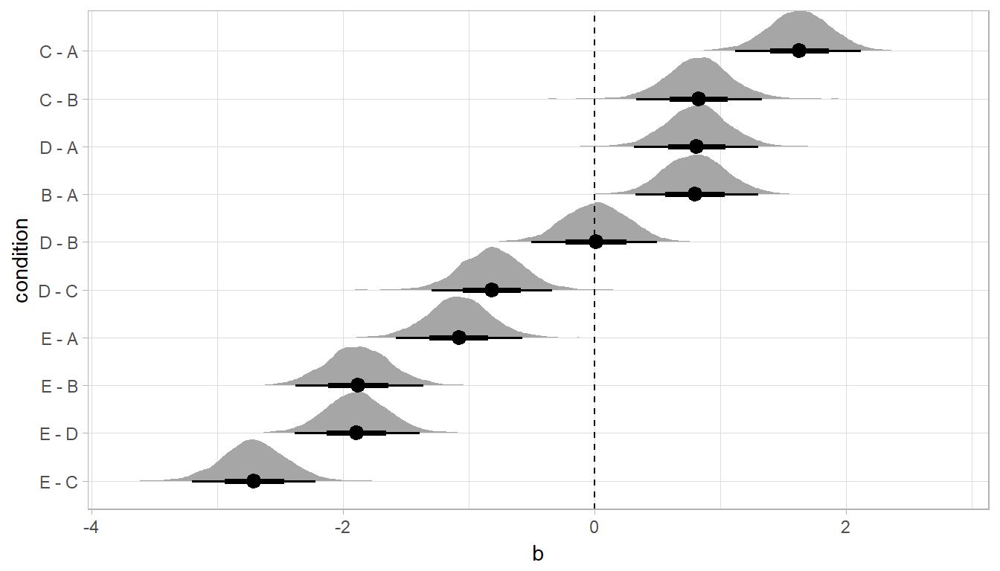

Extracting and visualizing tidy samples from rstanarm
Matthew Kay
2018-02-27
Introduction
This vignette describes how to use the tidybayes package to extract tidy data frames of samples of parameters, fits, and predictions from rstanarm. For a more general introduction to tidybayes and its use on general-purpose sampling languages (like Stan and JAGS), see vignette(“tidybayes”).
Setup
The following libraries are required to run this vignette:
library(magrittr)
library(dplyr)
library(tidyr)
library(modelr)
library(tidybayes)
library(ggplot2)
library(ggstance)
library(ggridges)
library(rstan)
library(rstanarm)These options help Stan run faster:
rstan_options(auto_write = TRUE)
options(mc.cores = parallel::detectCores())Example dataset
To demonstrate tidybayes, we will use a simple dataset with 10 observations from 5 conditions each:
set.seed(5)
n = 10
n_condition = 5
ABC =
data_frame(
condition = rep(c("A","B","C","D","E"), n),
response = rnorm(n * 5, c(0,1,2,1,-1), 0.5)
)A snapshot of the data looks like this:
head(ABC, 10)## # A tibble: 10 x 2
## condition response
## <chr> <dbl>
## 1 A -0.420
## 2 B 1.69
## 3 C 1.37
## 4 D 1.04
## 5 E -0.144
## 6 A -0.301
## 7 B 0.764
## 8 C 1.68
## 9 D 0.857
## 10 E -0.931(10 rows of 50)
This is a typical tidy format data frame: one observation per row. Graphically:
ABC %>%
ggplot(aes(y = condition, x = response)) +
geom_point()
Model
Let’s fit a hierarchical model with shrinkage towards a global mean:
m = stan_lmer(response ~ (1|condition), data = ABC,
prior = normal(0, 1, autoscale = FALSE),
prior_aux = student_t(3, 0, 1, autoscale = FALSE),
adapt_delta = .99)The results look like this:
summary(m)##
## Model Info:
##
## function: stan_lmer
## family: gaussian [identity]
## formula: response ~ (1 | condition)
## algorithm: sampling
## priors: see help('prior_summary')
## sample: 4000 (posterior sample size)
## observations: 50
## groups: condition (5)
##
## Estimates:
## mean sd 2.5% 25% 50% 75% 97.5%
## (Intercept) 0.6 0.5 -0.4 0.3 0.7 0.9 1.7
## b[(Intercept) condition:A] -0.4 0.5 -1.5 -0.8 -0.4 -0.1 0.6
## b[(Intercept) condition:B] 0.4 0.5 -0.7 0.0 0.4 0.7 1.4
## b[(Intercept) condition:C] 1.2 0.5 0.1 0.9 1.2 1.5 2.2
## b[(Intercept) condition:D] 0.4 0.5 -0.7 0.0 0.4 0.7 1.4
## b[(Intercept) condition:E] -1.5 0.5 -2.7 -1.8 -1.5 -1.2 -0.5
## sigma 0.6 0.1 0.5 0.5 0.6 0.6 0.7
## Sigma[condition:(Intercept),(Intercept)] 1.3 1.0 0.3 0.7 1.0 1.5 4.0
## mean_PPD 0.6 0.1 0.4 0.6 0.6 0.7 0.9
## log-posterior -56.3 2.4 -61.8 -57.6 -55.9 -54.5 -52.6
##
## Diagnostics:
## mcse Rhat n_eff
## (Intercept) 0.0 1.0 1059
## b[(Intercept) condition:A] 0.0 1.0 1126
## b[(Intercept) condition:B] 0.0 1.0 1074
## b[(Intercept) condition:C] 0.0 1.0 1147
## b[(Intercept) condition:D] 0.0 1.0 1115
## b[(Intercept) condition:E] 0.0 1.0 1116
## sigma 0.0 1.0 2498
## Sigma[condition:(Intercept),(Intercept)] 0.0 1.0 1484
## mean_PPD 0.0 1.0 4000
## log-posterior 0.1 1.0 1072
##
## For each parameter, mcse is Monte Carlo standard error, n_eff is a crude measure of effective sample size, and Rhat is the potential scale reduction factor on split chains (at convergence Rhat=1).
Gathering samples from a fit in tidy-format using spread_samples
Now that we have our results, the fun begins: getting the samples out in a tidy format! First, we’ll use the parameters function to get a list of raw parameter names so that we know what parameters we can extract from the model:
parameters(m)## [1] "(Intercept)" "b[(Intercept) condition:A]"
## [3] "b[(Intercept) condition:B]" "b[(Intercept) condition:C]"
## [5] "b[(Intercept) condition:D]" "b[(Intercept) condition:E]"
## [7] "sigma" "Sigma[condition:(Intercept),(Intercept)]"Here, (Intercept) is the global mean, and the b parameters are offsets from that mean for each condition. Given these parameters:
b[(Intercept) condition:A]b[(Intercept) condition:B]b[(Intercept) condition:C]b[(Intercept) condition:D]b[(Intercept) condition:E]
We might want a data frame where each row is a sample from either b[(Intercept) condition:A], b[(Intercept) condition:B], ...:C], ...:D], or ...:E], and where we have columns indexing which iteration of the sampler the row came from and which condition (A to E) it is for. That would allow us to easily compute quantities grouped by condition, or generate plots by condition using ggplot, or even merge samples with the original data to plot data and estimates.
The workhorse of tidybayes is the spread_samples function, which does this extraction for us. It includes a simple specification format that we can use to extract parameters and their indices into tidy-format data frames.
Gathering parameter indices into a separate column in a tidy format data frame
Given a parameter like this:
b[(Intercept) condition:D]
We can provide spread_samples with a column specification like this:
b[term,group]
Where term corresponds to (Intercept) and group to condition:D. There is nothing too magical about what spread_samples does with this specification: under the hood, it splits the parameter indices by commas and spaces (you can split by other characters by changing the sep argument). It lets you assign columns to the resulting indices in order. So b[(Intercept) condition:D] has indices (Intercept) and condition:D, and spread_samples lets us extract these indices as columns in the resulting tidy data frame of samples of b:
m %>%
spread_samples(b[term,group]) %>%
head(10)## # A tibble: 10 x 5
## # Groups: term, group [5]
## .chain .iteration term group b
## <int> <int> <chr> <chr> <dbl>
## 1 1 1 (Intercept) condition:A -0.886
## 2 1 1 (Intercept) condition:B 0.123
## 3 1 1 (Intercept) condition:C 0.821
## 4 1 1 (Intercept) condition:D -0.214
## 5 1 1 (Intercept) condition:E -2.06
## 6 1 2 (Intercept) condition:A -0.386
## 7 1 2 (Intercept) condition:B 0.179
## 8 1 2 (Intercept) condition:C 0.862
## 9 1 2 (Intercept) condition:D -0.328
## 10 1 2 (Intercept) condition:E -1.76(10 rows of 20000)
We can choose whatever names we want for the index columns; e.g.:
m %>%
spread_samples(b[t,g]) %>%
head(10)## # A tibble: 10 x 5
## # Groups: t, g [5]
## .chain .iteration t g b
## <int> <int> <chr> <chr> <dbl>
## 1 1 1 (Intercept) condition:A -0.886
## 2 1 1 (Intercept) condition:B 0.123
## 3 1 1 (Intercept) condition:C 0.821
## 4 1 1 (Intercept) condition:D -0.214
## 5 1 1 (Intercept) condition:E -2.06
## 6 1 2 (Intercept) condition:A -0.386
## 7 1 2 (Intercept) condition:B 0.179
## 8 1 2 (Intercept) condition:C 0.862
## 9 1 2 (Intercept) condition:D -0.328
## 10 1 2 (Intercept) condition:E -1.76(10 rows of 20000)
But the more descriptive and less cryptic names from the previous example are probably preferable.
In this particular model, there is only one term ((Intercept)), thus we could omit that index altogether to just get each group and the value of b for the corresponding condition:
m %>%
spread_samples(b[,group]) %>%
head(10)## # A tibble: 10 x 4
## # Groups: group [5]
## .chain .iteration group b
## <int> <int> <chr> <dbl>
## 1 1 1 condition:A -0.886
## 2 1 1 condition:B 0.123
## 3 1 1 condition:C 0.821
## 4 1 1 condition:D -0.214
## 5 1 1 condition:E -2.06
## 6 1 2 condition:A -0.386
## 7 1 2 condition:B 0.179
## 8 1 2 condition:C 0.862
## 9 1 2 condition:D -0.328
## 10 1 2 condition:E -1.76(10 rows of 20000)
Since all the groups in this case are from the condition factor, we may also want to separate out a column just containing the corresponding condition (A, B, C, etc). We can do that using tidyr::separate:
m %>%
spread_samples(b[,group]) %>%
separate(group, c("group", "condition"), ":") %>%
head(10)## # A tibble: 10 x 5
## .chain .iteration group condition b
## <int> <int> <chr> <chr> <dbl>
## 1 1 1 condition A -0.886
## 2 1 1 condition B 0.123
## 3 1 1 condition C 0.821
## 4 1 1 condition D -0.214
## 5 1 1 condition E -2.06
## 6 1 2 condition A -0.386
## 7 1 2 condition B 0.179
## 8 1 2 condition C 0.862
## 9 1 2 condition D -0.328
## 10 1 2 condition E -1.76(10 rows of 20000)
Alternatively, we could change the sep argument to spread_samples to also split on : (sep is a regular expression). Note: This works in this example, but will not work well on rstanarm models where interactions between factors are used as grouping levels in a multilevel model, thus : is not included in the default separators.
m %>%
spread_samples(b[,group,condition], sep = "[, :]") %>%
head(10)## # A tibble: 10 x 5
## # Groups: group, condition [5]
## .chain .iteration group condition b
## <int> <int> <chr> <chr> <dbl>
## 1 1 1 condition A -0.886
## 2 1 1 condition B 0.123
## 3 1 1 condition C 0.821
## 4 1 1 condition D -0.214
## 5 1 1 condition E -2.06
## 6 1 2 condition A -0.386
## 7 1 2 condition B 0.179
## 8 1 2 condition C 0.862
## 9 1 2 condition D -0.328
## 10 1 2 condition E -1.76Note: If you have used spread_samples with raw samples from Stan or JAGS, you may be used to using recover_types before spread_samples to get index column values back (e.g. if the index was a factor). This is not necessary when using spread_samples on rstanarm models, because those models already contain that information in their parameter names. For more on recover_types, see vignette(“tidybayes”).
Point estimates and intervals
With simple parameters
tidybayes provides a family of functions for generating point estimates and intervals from samples in a tidy format. These functions follow the naming scheme [mean|median|mode]_[qi|hdi], for example, mean_qi, median_qi, mode_hdi, and so on. The first name (before the _) indicates the type of point estimate, and the second name indicates the type of interval. qi yields a quantile interval (a.k.a. equi-tailed interval, central interval, or percentile interval) and hdi yields a highest (posterior) density interval. Custom estimates or intervals can also be applied using the point_interval function.
For example, we might extract the samples corresponding to the overall mean and standard deviation of observations:
m %>%
spread_samples(`(Intercept)`, sigma) %>%
head(10)## # A tibble: 10 x 4
## .chain .iteration `(Intercept)` sigma
## <int> <int> <dbl> <dbl>
## 1 1 1 0.982 0.621
## 2 1 2 0.930 0.590
## 3 1 3 0.842 0.608
## 4 1 4 0.908 0.605
## 5 1 5 0.449 0.499
## 6 1 6 0.469 0.491
## 7 1 7 0.775 0.485
## 8 1 8 0.417 0.518
## 9 1 9 0.786 0.533
## 10 1 10 1.07 0.490(10 rows of 4000)
Like with b[term,group], this gives us a tidy data frame. If we want the mean and 95% quantile interval of the parameters, we can apply mean_qi:
m %>%
spread_samples(`(Intercept)`, sigma) %>%
mean_qi(`(Intercept)`, sigma)## # A tibble: 1 x 7
## `(Intercept)` `(Intercept).low` `(Intercept).high` sigma sigma.low sigma.high .prob
## <dbl> <dbl> <dbl> <dbl> <dbl> <dbl> <dbl>
## 1 0.646 -0.368 1.73 0.567 0.460 0.695 0.950We can specify the columns we want to get means and intervals from, as above, or if we omit the list of columns, mean_qi will use every column that is not a grouping column or a special column (one that starts with ., like .chain or .iteration). Thus in the above example, (Intercept) and sigma are redundant arguments to mean_qi because they are also the only columns we gathered from the model. So we can simplify this to:
m %>%
spread_samples(`(Intercept)`, sigma) %>%
mean_qi()## # A tibble: 1 x 7
## `(Intercept)` `(Intercept).low` `(Intercept).high` sigma sigma.low sigma.high .prob
## <dbl> <dbl> <dbl> <dbl> <dbl> <dbl> <dbl>
## 1 0.646 -0.368 1.73 0.567 0.460 0.695 0.950If you would rather have a long-format list of intervals, use gather_samples instead:
m %>%
gather_samples(`(Intercept)`, sigma) %>%
mean_qi()## # A tibble: 2 x 5
## # Groups: term [2]
## term estimate conf.low conf.high .prob
## <chr> <dbl> <dbl> <dbl> <dbl>
## 1 (Intercept) 0.646 -0.368 1.73 0.950
## 2 sigma 0.567 0.460 0.695 0.950The conf.low and conf.high naming scheme is used when mean_qi summarizes a single column in order to be consistent with the output of broom::tidy. This makes it easier to compare output from tidybayes to other models supported by broom.
For more on gather_samples, see vignette(“tidybayes”).
With indexed parameters
When we have a parameter with one or more indices, such as b, we can apply mean_qi (or other functions in the point_estimate family) as we did before:
m %>%
spread_samples(b[,group]) %>%
mean_qi()## # A tibble: 5 x 5
## # Groups: group [5]
## group b conf.low conf.high .prob
## <chr> <dbl> <dbl> <dbl> <dbl>
## 1 condition:A -0.447 -1.53 0.595 0.950
## 2 condition:B 0.353 -0.707 1.37 0.950
## 3 condition:C 1.18 0.106 2.22 0.950
## 4 condition:D 0.370 -0.713 1.42 0.950
## 5 condition:E -1.52 -2.66 -0.493 0.950How did mean_qi know what to aggregate? Data frames returned by spread_samples are automatically grouped by all index variables you pass to it; in this case, that means spread_samples groups its results by group. mean_qi respects those groups, and calculates the estimates and intervals within all groups. Then, because no columns were passed to mean_qi, it acts on the only non-special (.-prefixed) and non-group column, b. So the above shortened syntax is equivalent to this more verbose call:
m %>%
spread_samples(b[,group]) %>%
group_by(group) %>% # this line not necessary (done by spread_samples)
mean_qi(b) # b is not necessary (it is the only non-group column)## # A tibble: 5 x 5
## # Groups: group [5]
## group b conf.low conf.high .prob
## <chr> <dbl> <dbl> <dbl> <dbl>
## 1 condition:A -0.447 -1.53 0.595 0.950
## 2 condition:B 0.353 -0.707 1.37 0.950
## 3 condition:C 1.18 0.106 2.22 0.950
## 4 condition:D 0.370 -0.713 1.42 0.950
## 5 condition:E -1.52 -2.66 -0.493 0.950Combining variables with different indices in a single tidy format data frame
spread_samples and gather_samples support extracting variables that have different indices into the same data frame. Indices with the same name are automatically matched up, and values are duplicated as necessary to produce one row per all combination of levels of all indices. For example, we might want to calculate the mean within each condition (call this condition_mean). In this model, that mean is the intercept ((Intercept)) plus the effect for a given condition (b).
We can gather samples from (Intercept) and b together in a single data frame:
m %>%
spread_samples(`(Intercept)`, b[,group]) %>%
head(10)## # A tibble: 10 x 5
## # Groups: group [5]
## .chain .iteration `(Intercept)` group b
## <int> <int> <dbl> <chr> <dbl>
## 1 1 1 0.982 condition:A -0.886
## 2 1 1 0.982 condition:B 0.123
## 3 1 1 0.982 condition:C 0.821
## 4 1 1 0.982 condition:D -0.214
## 5 1 1 0.982 condition:E -2.06
## 6 1 2 0.930 condition:A -0.386
## 7 1 2 0.930 condition:B 0.179
## 8 1 2 0.930 condition:C 0.862
## 9 1 2 0.930 condition:D -0.328
## 10 1 2 0.930 condition:E -1.76(10 rows of 20000)
Within each sample, (Intercept) is repeated as necessary to correspond to every index of b. Thus, the mutate function from dplyr can be used to find their sum, condition_mean (which is the estimated mean for each condition):
m %>%
spread_samples(`(Intercept)`, b[,group]) %>%
mutate(condition_mean = `(Intercept)` + b) %>%
mean_qi(condition_mean)## # A tibble: 5 x 5
## # Groups: group [5]
## group condition_mean conf.low conf.high .prob
## <chr> <dbl> <dbl> <dbl> <dbl>
## 1 condition:A 0.199 -0.150 0.549 0.950
## 2 condition:B 0.999 0.644 1.35 0.950
## 3 condition:C 1.83 1.47 2.20 0.950
## 4 condition:D 1.02 0.664 1.37 0.950
## 5 condition:E -0.877 -1.24 -0.512 0.950mean_qi uses tidy evaluation (see vignette("tidy-evaluation", package = "rlang")), so it can take column expressions, not just column names. Thus, we can simplify the above example by moving the calculation of condition_mean from mutate into mean_qi:
m %>%
spread_samples(`(Intercept)`, b[,group]) %>%
mean_qi(condition_mean = `(Intercept)` + b)## # A tibble: 5 x 5
## # Groups: group [5]
## group condition_mean conf.low conf.high .prob
## <chr> <dbl> <dbl> <dbl> <dbl>
## 1 condition:A 0.199 -0.150 0.549 0.950
## 2 condition:B 0.999 0.644 1.35 0.950
## 3 condition:C 1.83 1.47 2.20 0.950
## 4 condition:D 1.02 0.664 1.37 0.950
## 5 condition:E -0.877 -1.24 -0.512 0.950Plotting point estimates and intervals
Plotting point estimates and with one interval is straightforward using the ggplot2::geom_pointrange or ggstance::geom_pointrangeh geoms:
m %>%
spread_samples(`(Intercept)`, b[,group]) %>%
mean_qi(condition_mean = `(Intercept)` + b) %>%
ggplot(aes(y = group, x = condition_mean, xmin = conf.low, xmax = conf.high)) +
geom_pointrangeh()
Interval estimates with multiple probability levels
mean_qi and its sister functions can also produce an arbitrary number of probability intervals by setting the .prob = argument:
m %>%
spread_samples(`(Intercept)`, b[,group]) %>%
mean_qi(condition_mean = `(Intercept)` + b, .prob = c(.95, .8, .5))## # A tibble: 15 x 5
## # Groups: group [5]
## group condition_mean conf.low conf.high .prob
## <chr> <dbl> <dbl> <dbl> <dbl>
## 1 condition:A 0.199 -0.150 0.549 0.950
## 2 condition:B 0.999 0.644 1.35 0.950
## 3 condition:C 1.83 1.47 2.20 0.950
## 4 condition:D 1.02 0.664 1.37 0.950
## 5 condition:E -0.877 -1.24 -0.512 0.950
## 6 condition:A 0.199 -0.0311 0.425 0.800
## 7 condition:B 0.999 0.779 1.23 0.800
## 8 condition:C 1.83 1.60 2.06 0.800
## 9 condition:D 1.02 0.787 1.24 0.800
## 10 condition:E -0.877 -1.11 -0.646 0.800
## 11 condition:A 0.199 0.0807 0.316 0.500
## 12 condition:B 0.999 0.879 1.12 0.500
## 13 condition:C 1.83 1.71 1.95 0.500
## 14 condition:D 1.02 0.899 1.13 0.500
## 15 condition:E -0.877 -0.999 -0.754 0.500The results are in a tidy format: one row per group and probability level (.prob). This facilitates plotting. For example, assigning -.prob to the size aesthetic will show all intervals, making thicker lines correspond to smaller intervals. The geom_pointintervalh geom, provided by tidybayes, is a shorthand for a geom_pointrangeh with xmin, xmax, and size set appropriately based on the conf.low, conf.high, and .prob columns in the data to produce plots of estimates with multiple probability levels:
m %>%
spread_samples(`(Intercept)`, b[,group]) %>%
mean_qi(condition_mean = `(Intercept)` + b, .prob = c(.95, .66)) %>%
ggplot(aes(y = group, x = condition_mean)) +
geom_pointintervalh() 
Posterior fits
Rather than calculating conditional means manually as in the previous example, we could use add_fitted_samples, which is analogous to rstanarm::posterior_linpred (giving posterior draws from the model’s linear predictor, in this case, posterior distributions of conditional means), but uses a tidy data format. We can combine it with modelr::data_grid to first generate a grid describing the fits we want, then transform that grid into a long-format data frame of samples of posterior fits:
ABC %>%
data_grid(condition) %>%
add_fitted_samples(m) %>%
head(10)## # A tibble: 10 x 5
## # Groups: condition, .row [1]
## condition .row .chain .iteration estimate
## <chr> <int> <int> <int> <dbl>
## 1 A 1 NA 1 0.0959
## 2 A 1 NA 2 0.545
## 3 A 1 NA 3 0.279
## 4 A 1 NA 4 0.223
## 5 A 1 NA 5 0.153
## 6 A 1 NA 6 0.0941
## 7 A 1 NA 7 0.183
## 8 A 1 NA 8 0.334
## 9 A 1 NA 9 0.457
## 10 A 1 NA 10 -0.0262(10 rows of 20000)
To plot this example, we’ll also show the use of stat_pointintervalh instead of geom_pointintervalh, which summarizes samples into estimates and intervals within ggplot:
ABC %>%
data_grid(condition) %>%
add_fitted_samples(m) %>%
ggplot(aes(x = estimate, y = condition)) +
stat_pointintervalh(.prob = c(.66, .95))
Posterior predictions
Where add_fitted_samples is analogous to rstanarm::posterior_linpred, add_predicted_samples is analogous to rstanarm::posterior_predict, giving samples from the posterior predictive distribution.
Here is an example of posterior predictive distributions plotted using ggridges::geom_density_ridges:
ABC %>%
data_grid(condition) %>%
add_predicted_samples(m) %>%
ggplot(aes(x = pred, y = condition)) +
geom_density_ridges()## Picking joint bandwidth of 0.1
We could also use tidybayes::stat_intervalh to plot predictive bands alongside the data:
ABC %>%
data_grid(condition) %>%
add_predicted_samples(m) %>%
ggplot(aes(y = condition, x = pred)) +
stat_intervalh() +
geom_point(aes(x = response), data = ABC) +
scale_color_brewer()
Altogether, data, posterior predictions, and estimates of the means:
grid = ABC %>%
data_grid(condition)
fits = grid %>%
add_fitted_samples(m)
preds = grid %>%
add_predicted_samples(m)
ABC %>%
ggplot(aes(y = condition, x = response)) +
stat_intervalh(aes(x = pred), data = preds) +
stat_pointintervalh(aes(x = estimate), data = fits, .prob = c(.66, .95), position = position_nudge(y = -0.2)) +
geom_point() +
scale_color_brewer()
Fit/prediction curves
To demonstrate drawing fit curves with uncertainty, let’s fit a slightly naive model to part of the mtcars dataset:
m_mpg = stan_glm(mpg ~ hp * cyl, data = mtcars)We can draw fit curves with probability bands:
mtcars %>%
group_by(cyl) %>%
data_grid(hp = seq_range(hp, n = 51)) %>%
add_fitted_samples(m_mpg) %>%
ggplot(aes(x = hp, y = mpg, color = ordered(cyl))) +
stat_lineribbon(aes(y = estimate)) +
geom_point(data = mtcars) +
scale_fill_brewer(palette = "Greys")
Or we can sample a reasonable number of fit lines (say 100) and overplot them:
mtcars %>%
group_by(cyl) %>%
data_grid(hp = seq_range(hp, n = 101)) %>%
add_fitted_samples(m_mpg, n = 100) %>%
ggplot(aes(x = hp, y = mpg, color = ordered(cyl))) +
geom_line(aes(y = estimate, group = paste(cyl, .iteration)), alpha = 0.25) +
geom_point(data = mtcars)
Or, for posterior predictions (instead of fits), we can go back to probability bands:
mtcars %>%
group_by(cyl) %>%
data_grid(hp = seq_range(hp, n = 101)) %>%
add_predicted_samples(m_mpg) %>%
ggplot(aes(x = hp, y = mpg, color = ordered(cyl))) +
stat_lineribbon(aes(y = pred), .prob = c(.99, .95, .8, .5), alpha = 0.25) +
geom_point(data = mtcars) +
scale_fill_brewer(palette = "Greys")
This gets difficult to judge by group, so probably better to facet into multiple plots. Fortunately, since we are using ggplot, that functionality is built in:
mtcars %>%
group_by(cyl) %>%
data_grid(hp = seq_range(hp, n = 101)) %>%
add_predicted_samples(m_mpg) %>%
ggplot(aes(x = hp, y = mpg)) +
stat_lineribbon(aes(y = pred), .prob = c(.99, .95, .8, .5)) +
geom_point(data = mtcars) +
scale_fill_brewer() +
facet_grid(. ~ cyl)
Comparing levels of a factor
If we wish compare the means from each condition, compare_levels facilitates comparisons of the value of some variable across levels of a factor. By default it computes all pairwise differences.
Let’s demonstrate compare_levels with another plotting geom, geom_halfeyeh, which gives horizontal “half-eye” plots, combining interval estimates with a density plot:
#N.B. the syntax for compare_levels is experimental and may change
m %>%
spread_samples(b[,,condition], sep = "[, :]") %>%
compare_levels(b, by = condition) %>%
ggplot(aes(y = condition, x = b)) +
geom_halfeyeh()
If you prefer “caterpillar” plots, ordered by something like the mean of the difference, you can reorder the factor before plotting:
#N.B. the syntax for compare_levels is experimental and may change
m %>%
spread_samples(b[,,condition], sep = "[, :]") %>%
compare_levels(b, by = condition) %>%
ungroup() %>%
mutate(condition = reorder(condition, b)) %>%
ggplot(aes(y = condition, x = b)) +
geom_halfeyeh() +
geom_vline(xintercept = 0, linetype = "dashed")